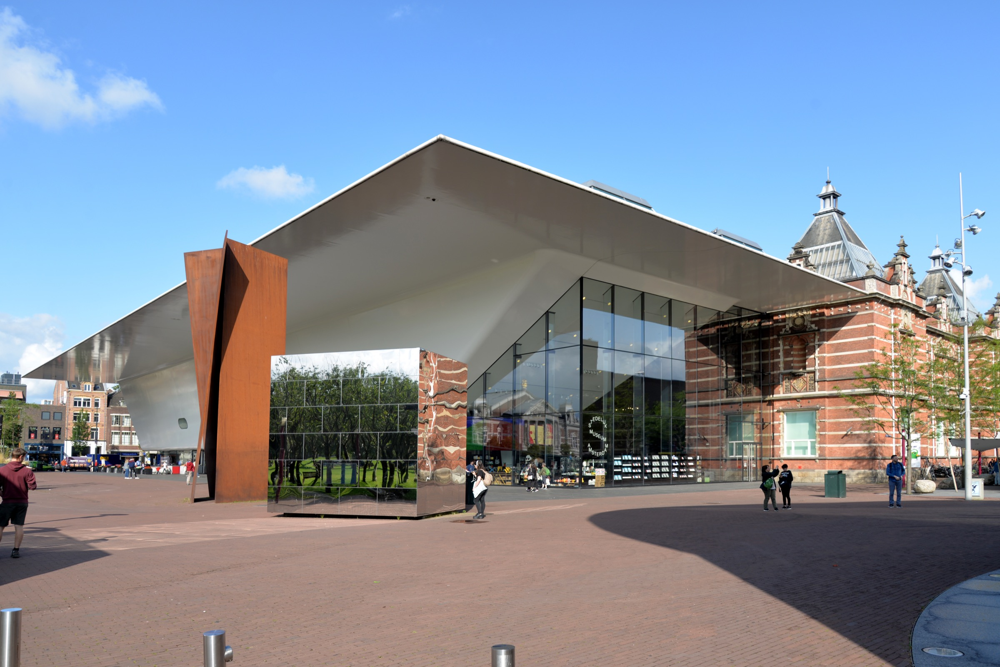
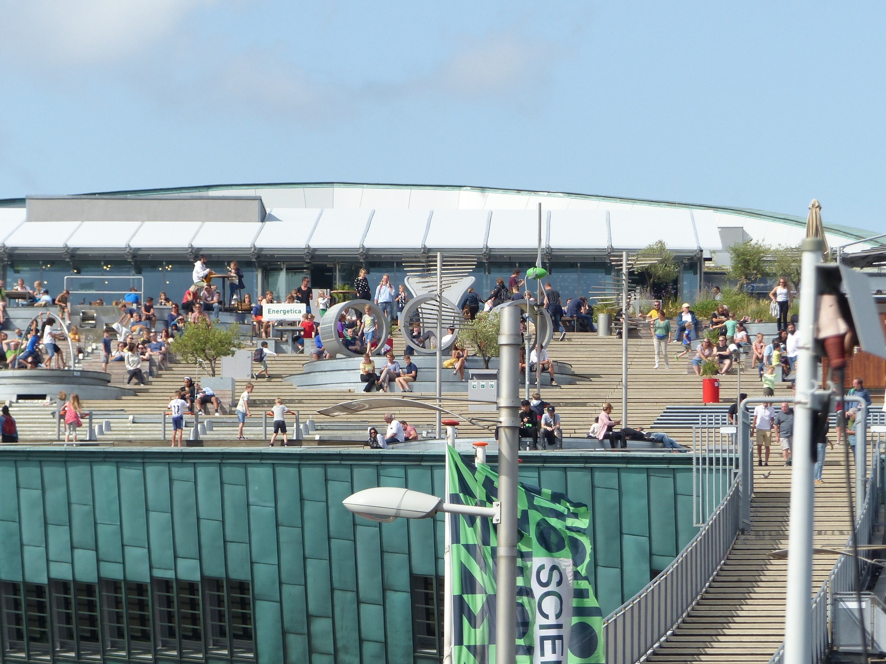

Art & Museums
Vermeer, Van Gogh & beyond
The best museums in one of the great art cities, with a strategy for going with young children and someone who appreciates a calm pace.
The best museums in one of the great art cities, with a strategy for going with young children and someone who appreciates a calm pace.
Two temporary exhibitions at the Rijksmuseum close on May 25. Visit in the first day or two of the trip if these interest you. The permanent collection (the Vermeers, the Night Watch) is always there.

The Rijksmuseum holds four Vermeer paintings in the Gallery of Honour on Floor 2, more than anywhere else on Earth. The Milkmaid. Woman Reading a Letter. The Little Street. The Love Letter. The Night Watch anchors the far end of the hall. Go at 9AM on a Tuesday, Wednesday, or Thursday and the Gallery of Honour will be nearly empty.
Your Vrienden membership gives you Fast Lane priority entry; no queuing ever, which matters enormously with a toddler and a tired group. Free wheelchairs and pushchairs at the info desk. There's also a quiet room for visitors who need it.
Daily 14:30–16:00. A guided tour designed for visitors with dementia and their companions: calm, participatory, focused on looking rather than listening. €30 for a group of up to 12. Worth booking.

The world's largest collection of Van Gogh's work: around 200 paintings and 500 drawings spanning his career. Timed entry is required and the museum sells out. Book your slot in advance at vangoghmuseum.nl.
Not included in the City Card; schedule your visit outside the 72h window to maximize the card's value. Bodhi is free under 18, and the museum is stroller-friendly on the ground floor.

Tickets release on Tuesdays at exactly 10:00AM CET, six weeks before your visit date. For late May visits, that's mid-to-late March. Create your account at annefrank.org now so you're ready to click at the right moment.
The annex has steep, narrow stairs and no stroller access. It's also emotionally intense. The best plan for your group: Jon and Jess take an evening slot, while Scott, Edie, and Bodhi enjoy the Begijnhof or a canal walk. Westerkerk is just next door and free to enter.


Amsterdam's museum of modern and contemporary art. In May 2026: Kho Liang Ie retrospective and a Danh Vo solo show. Spacious, calm, and less crowded than the Rijksmuseum. Good for a quiet afternoon. Stroller-friendly throughout.

Four floors of hands-on science experiments designed for curious kids. The rooftop is free to access separately: water features and views over the harbor, great for Bodhi on a warm day. Entirely interactive, not a passive museum experience.
Rembrandt's actual house on Jodenbreestraat, where he lived and worked from 1639 to 1658. Carefully reconstructed interior, original print room and studio. A 15-minute walk from your apartment. The closest major museum to where you're staying.

Designed specifically for children aged 2 to 6 (Bodhi's exact age group). Twelve thematic rooms: Miffy's house, a traffic village, a farm, a zoo. Everything is child-height and explorable. Book tickets in advance at nijntjemuseum.nl.
Utrecht is a beautiful small city in its own right. The canals are at a lower level than the streets, with terraced café-restaurants right on the water. Edie might enjoy a coffee at a canal-side café while others do the museum, then everyone explores together after.